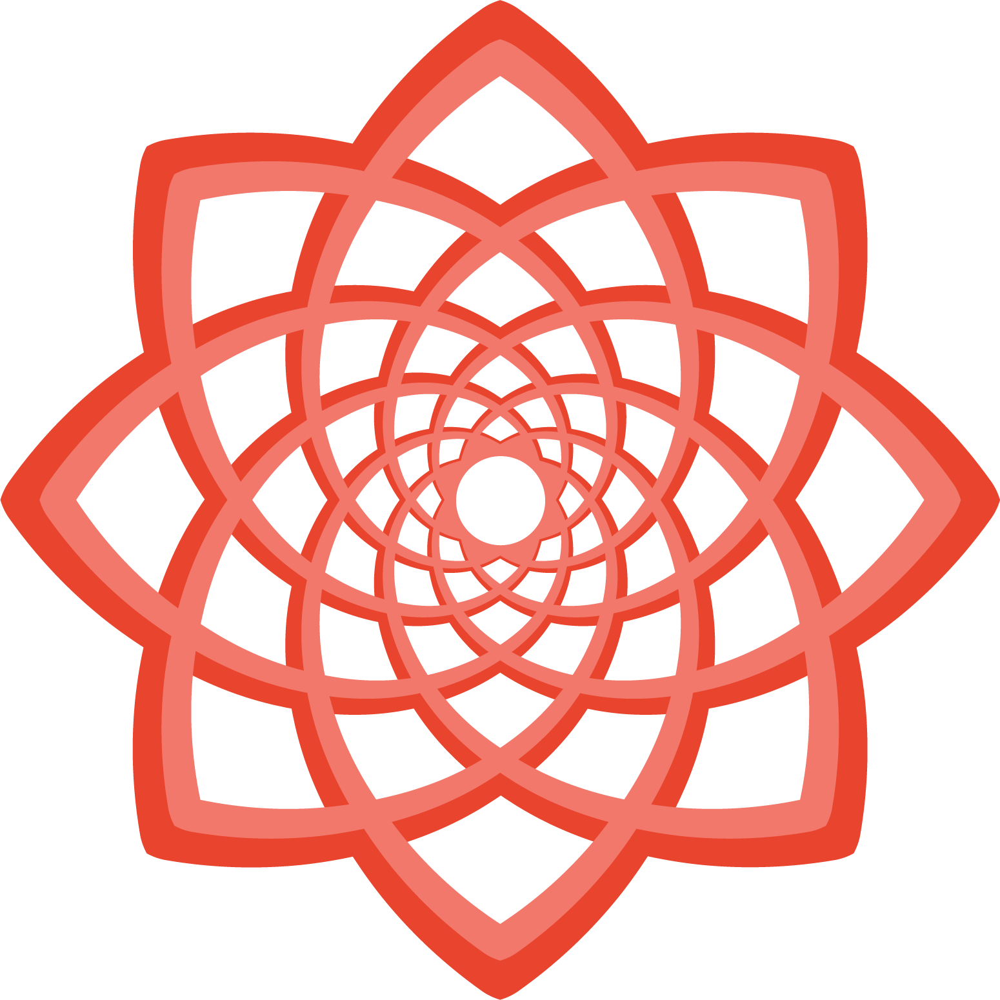
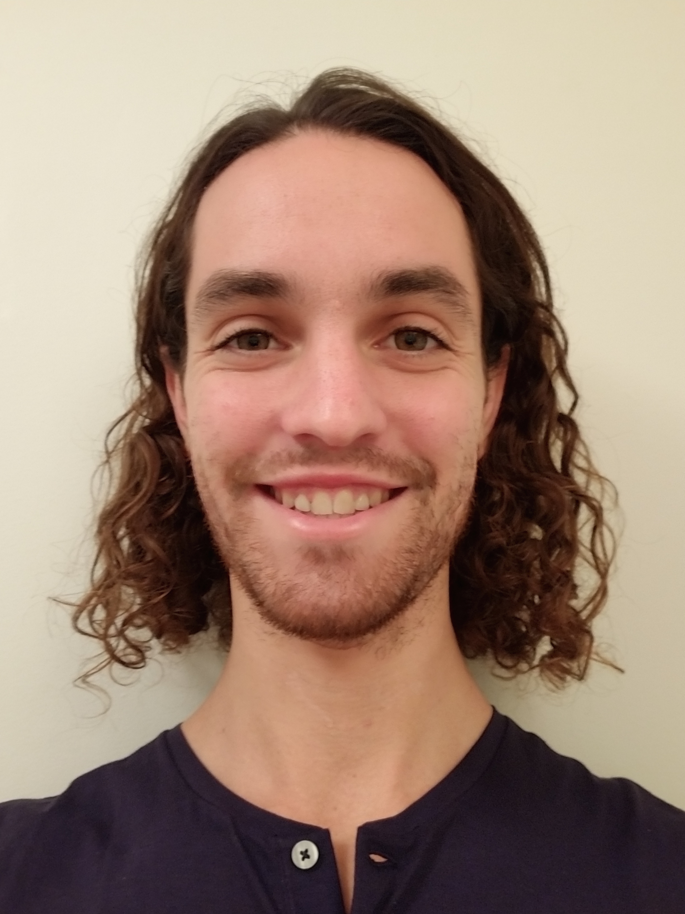

Art
Chronosphere
Breath of the Compassionate
Voronoi
interactive

Inspiration
- Mycologos - Mycological Education
- Fungi Academy - Mycological Education
- Smallhold - Distributed mushroom growers
- Ecovative - Mycelium Biofabrication Platform
- Mycoworks - Mycelium Leather
- Ambrosia Elixirs - Building Conscious Community with the wisdom of plants in New York City
- Numundo - Hub for Eco Villages, Regenerative Projects and Conscious Gatherings
- Michael Rice Architect - Mantic Architecture
- Bio Arc - Design firm
- Lavender Labyrinth - Cherry Point Market, Michigan USA
- Permaculture Mandala - RISE, Costa Rica
- Theraphi - Plasma healing
- Lucia N°03 - Light healing
- Quantum Sound Therapy - Sound healing, structured water
- Be Life Water - Water structuring
Mushrooms ~ regeneration and innovation
Community
Sacred Architecture
Life-restoring technology
Software Engineering ~ Past Work
About

Who am I?
I am an artist and a scientist, and when I balance the two, I am an alchemist.
In school, I studied the body-mind connection through neuroscience, philosophy and artifical intelligence.
Now I continue my study through song, dance, yoga, qi gong, breathwork, meditation and plant alchemy.
I love to share my practices.
If you would like to connect and collaborate, please reach me at dan.friedma@gmail.com